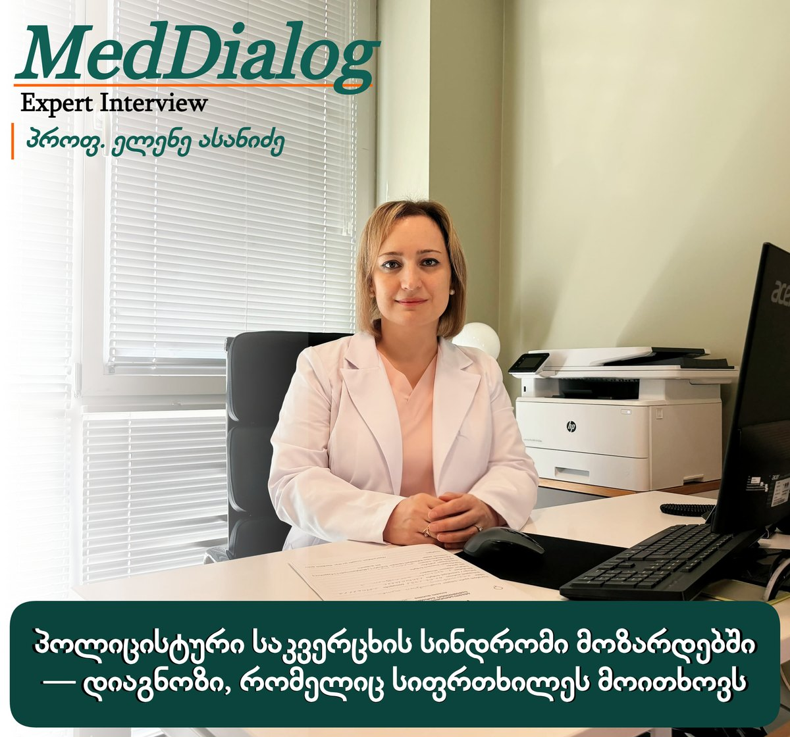

ექსპერტის ინტერვიუ
პოლიცისტური საკვერცხის სინდრომი მოზარდებში — დიაგნოზი, რომელიც სიფრთხილეს მოითხოვს

მოზარდობის პერიოდში არარეგულარული მენსტრუალური ციკლი და აკნე საკმაოდ ხშირად გვხვდება. ზოგ შემთხვევაში შეიძლება აღინიშნებოდეს ჭარბთმიანობაც, რაც ხშირად მშობლებისა და თავად მოზარდის შეშფოთების მიზეზი ხდება. ამ ნიშნების შეფასება მარტივი არ არის, რადგან ისინი შეიძლება იყოს როგორც პუბერტატის ფიზიოლოგიური ნაწილი, ისე ისეთი დაავადების პირველი გამოვლინება, რომელსაც მომავალში შესაძლოა გავლენა ჰქონდეს რეპროდუქციულ და მეტაბოლურ ჯანმრთელობაზე.
სპეციალისტები აღნიშნავენ, რომ პოლიცისტური საკვერცხის სინდრომის დიაგნოზი მოზარდებში ერთ-ერთი ყველაზე რთული კლინიკური გამოწვევაა. ნაჩქარევმა დიაგნოზმა შეიძლება გამოიწვიოს ჰიპერდიაგნოსტიკა და არასაჭირო მკურნალობა, ხოლო დაგვიანებულმა შეფასებამ — სიმპტომებისა და მეტაბოლური რისკების მართვის გადავადება.
ამ მნიშვნელოვან თემაზე გვესაუბრება პროფესორი ელენე ასანიძე, მედიცინის დოქტორი, ბავშვთა და მოზარდთა გინეკოლოგი, მეან-გინეკოლოგი.
ქალბატონო ელენე, 2026 წელს პოლიცისტური საკვერცხის სინდრომისთვის ახალი საერთაშორისო სახელწოდება გამოცხადდა. რას უკავშირდება ეს ცვლილება და რატომ გახდა ის საჭირო?
პოლიცისტური საკვერცხის სინდრომი (პსს) მხოლოდ გინეკოლოგიური პათოლოგია არ არის. ის წარმოადგენს კომპლექსურ, მრავალსისტემურ ენდოკრინულ-მეტაბოლურ მდგომარეობას, რომელიც გავლენას ახდენს არა მხოლოდ რეპროდუქციულ, არამედ მეტაბოლურ, გულ-სისხლძარღვთა და ფსიქოემოციურ ჯანმრთელობაზეც. სწორედ ამიტომ, 2026 წელს საერთაშორისო ექსპერტთა კონსენსუსის საფუძველზე შემოთავაზებული იქნა ახალი სახელწოდება — პოლიენდოკრინულ-მეტაბოლური საკვერცხის სინდრომი (პმსს).
ახალი სახელწოდება უკეთ ასახავს ამ მდგომარეობის მრავალსისტემურ ბუნებას და ხაზს უსვამს, რომ მისი არსი მხოლოდ საკვერცხეების ცვლილებებით არ შემოიფარგლება. ძველი სახელწოდება ხშირად ქმნიდა შთაბეჭდილებას, თითქოს პრობლემა მხოლოდ საკვერცხეებში არსებულ „კისტებს“ უკავშირდებოდა, მაშინ როცა მდგომარეობა ჰორმონულ და მეტაბოლურ პროცესებს მოიცავს. ახალი ტერმინის დანერგვა ეტაპობრივად მოხდება და მისი სრული ინტეგრაცია 2028 წლის საერთაშორისო გაიდლაინის განახლებასთან არის დაკავშირებული; გარდამავალ პერიოდში კი ორივე ტერმინის გამოყენება შესაძლებელია.
რატომ არის რთული ამ მდგომარეობის დიაგნოსტიკა განსაკუთრებით მოზარდებში?
მოზარდობის ასაკში პმსს-ის დიაგნოსტიკა განსაკუთრებულ სიფრთხილეს მოითხოვს, რადგან ხშირად რთულია პუბერტატის ფიზიოლოგიური ცვლილებებისა და პმსს-ის კლინიკური გამოვლინებების ერთმანეთისგან გამიჯვნა. არარეგულარული მენსტრუალური ციკლი, აკნე და ულტრაბგერითი (უბგ) კვლევით გამოვლენილი საკვერცხეების პოლიცისტური მორფოლოგია ხშირად სრულიად ნორმალური მოვლენაა მოზარდობის პერიოდში და თავისთავად პმსს-ის არსებობას არ ადასტურებს. სწორედ ამიტომ დიაგნოზი მხოლოდ მკაფიო კრიტერიუმებზე დაყრდნობით უნდა დაისვას.
რა კრიტერიუმებით ისმება დღეს პსს-ის დიაგნოზი მოზარდებში?
2023 წლის საერთაშორისო მტკიცებულებებზე დაფუძნებული რეკომენდაციების მიხედვით, მოზარდებში პსს-ის დიაგნოზი უნდა დაისვას მხოლოდ მაშინ, როდესაც ერთდროულად არსებობს ორი აუცილებელი კრიტერიუმი:
- მენსტრუალური ციკლის დარღვევა/ოვულატორული დისფუნქცია, რომელიც შეფასებულია გოგონას ასაკისა და მენარქიდან გასული დროის გათვალისწინებით;
- კლინიკური და/ან ბიოქიმიური ჰიპერანდროგენიზმი.
დიაგნოზის დასმამდე აუცილებელია გამოირიცხოს სხვა მდგომარეობები, რომლებიც შეიძლება იწვევდეს მენსტრუალური ციკლის დარღვევას ან ჰიპერანდროგენიზმს, მათ შორის ფარისებრი ჯირკვლის დარღვევები, ჰიპერპროლაქტინემია, თირკმელზედა ჯირკვლის არაკლასიკური თანდაყოლილი ჰიპერპლაზია, კუშინგის სინდრომი და ანდროგენების მაპროდუცირებელი სიმსივნეები.
ხშირად მშობლებს აინტერესებთ, როდის ითვლება არარეგულარული მენსტრუალური ციკლი ნორმად და როდის საჭიროებს დამატებით შეფასებას მოზარდებში?
ეს ერთ-ერთი ყველაზე გავრცელებული კითხვაა. მენარქის, ანუ პირველი მენსტრუაციის შემდეგ ჰორმონული რეგულაციის სისტემა ჯერ კიდევ ჩამოყალიბების პროცესშია. ამიტომ პირველ წლებში მენსტრუალური ციკლის არარეგულარულობა ხშირად ფიზიოლოგიურია და პუბერტატის პერიოდისთვის დამახასიათებელ მოვლენად ითვლება. მენარქიდან 1-3 წლის პერიოდში 21–45-დღიანი ინტერვალი, როგორც წესი, დასაშვებია, ხოლო 21 დღეზე ნაკლები ან 45 დღეზე მეტი ინტერვალი დამატებით შეფასებას საჭიროებს. მენარქიდან 3 წლის შემდეგ ციკლი, ჩვეულებრივ, 21–35 დღის ფარგლებში რეგულირდება, ამ პერიოდში 21 დღეზე ნაკლები ან 35 დღეზე მეტი ინტერვალი, ასევე წელიწადში 8-ზე ნაკლები ციკლი, საყურადღებოა. მენარქიდან ერთი წლის შემდეგ 90 დღეზე ხანგრძლივი ინტერვალი ნებისმიერ შემთხვევაში დამატებით შეფასებას მოითხოვს.
მოზარდობის პერიოდში რეპროდუქციული სისტემა ჯერ კიდევ მომწიფების პროცესშია, სწორედ ამიტომ ციკლის შეფასება ყოველთვის უნდა მოხდეს ასაკისა და მენარქიდან გასული დროის მიხედვით და არა მხოლოდ ზრდასრულთა კრიტერიუმებით.
როგორ შეიძლება მშობელმა ან თავად მოზარდმა ეჭვი მიიტანოს ჰიპერანდროგენიზმზე?
ჰიპერანდროგენიზმი არის მდგომარეობა, როდესაც გოგონას ან ქალის ორგანიზმში ანდროგენების, ე.წ. მამაკაცური ჰორმონების, გავლენა მომატებულია. ანდროგენები ქალის ორგანიზმშიც ბუნებრივად არსებობს, მაგრამ როცა მათი დონე ჭარბია, შეიძლება სხვადასხვა სიმპტომი გამოიწვიოს.
კლინიკური ჰიპერანდროგენიზმი შეიძლება გამოვლინდეს ჰირსუტიზმით, ანუ ჭარბთმიანობით — უხეში (ტერმინალური) თმის ჭარბი ზრდით ანდროგენ-დამოკიდებულ უბნებში, მაგალითად სახეზე, მკერდზე, მუცლის შუა ხაზზე ან ზურგზე; ასევე მძიმე ან მკურნალობაზე რეზისტენტული აკნეთი ან, შედარებით იშვიათად, ანდროგენული ალოპეციით, ანუ თმის შეთხელებით/გამელოტებით.
ბიოქიმიური ჰიპერანდროგენიზმი გულისხმობს სისხლში ანდროგენების მომატებულ დონეს, რომელიც უნდა დადასტურდეს შესაბამისი ლაბორატორიული კვლევებით.
ზრდასრულ ქალებში პსს-ის დიაგნოსტიკისას ულტრაბგერით გამოვლენილი საკვერცხეების პოლიცისტური მორფოლოგია ერთ-ერთ დიაგნოსტიკურ კრიტერიუმად განიხილება. აქვს თუ არა იგივე მნიშვნელობა ამ კვლევას მოზარდებში?
რეპროდუქციული ასაკის ქალებისგან განსხვავებით, მოზარდებში უბგ კვლევით გამოვლენილი პოლიცისტური საკვერცხეების მორფოლოგია და ანტიმიულერული ჰორმონის განსაზღვრა პმსს-ის დიაგნოსტიკურ კრიტერიუმად არ გამოიყენება.
ამის მიზეზია ის, რომ პუბერტატის პერიოდში მრავალ ჯანმრთელ მოზარდს შეიძლება აღენიშნებოდეს საკვერცხეების პოლიცისტური მორფოლოგია და ანტიმიულერული ჰორმონის ფიზიოლოგიურად შედარებით მაღალი დონე. შესაბამისად, ამ კვლევებზე დიაგნოზის დასმის მიზნით დაყრდნობამ შეიძლება მნიშვნელოვნად გაზარდოს ჰიპერდიაგნოსტიკის რისკი.
მოქმედი რეკომენდაციების მიხედვით, მენარქიდან 8 წლამდე საკვერცხეების პოლიცისტური მორფოლოგია უბგ კვლევით და ანტიმიულერული ჰორმონი პსს/პმსს-ის დიაგნოსტიკისთვის არ უნდა იქნას გამოყენებული, რადგან ამ ასაკობრივ პერიოდში მათი მაჩვენებლები ხშირად ფიზიოლოგიურ თავისებურებებს ასახავს და არა აუცილებლად პათოლოგიას.
ხშირად მიიჩნევა, რომ პსს ავტომატურად ინსულინრეზისტენტობას ნიშნავს. რამდენად სწორია ეს შეხედულება და რეკომენდებულია თუ არა რუტინული სკრინინგი?
ინსულინრეზისტენტობა პმსს-ის მნიშვნელოვანი მეტაბოლური კომპონენტია, თუმცა დიაგნოსტიკურ კრიტერიუმს არ წარმოადგენს და ყველა მოზარდს არ აღენიშნება. პუბერტატის პერიოდში ინსულინის მიმართ მგრძნობელობა ფიზიოლოგიურადაც მცირდება, ამიტომ ინსულინის დონის ან ინსულინრეზისტენტობის ინდექსის (HOMA-IR) რუტინული განსაზღვრა დიაგნოზის დასადასტურებლად რეკომენდებული არ არის. თუმცა მეტაბოლური შეფასების საჭიროება ინდივიდუალურად განისაზღვრება. განსაკუთრებით მნიშვნელოვანია გლიკემიური სტატუსის შეფასება ჭარბი წონის ან სიმსუქნის, აკანტოზის, ოჯახური ანამნეზის ან სხვა კარდიომეტაბოლური რისკ-ფაქტორების არსებობისას.
როგორ უნდა ავიცილოთ თავიდან როგორც ჰიპერდიაგნოსტიკა, ისე დაგვიანებული დიაგნოზი?
თუ მოზარდი ჯერ არ აკმაყოფილებს პმსს-ის სრულ დიაგნოსტიკურ კრიტერიუმებს, მაგრამ აქვს გარკვეული კლინიკური ნიშნები, ასეთ შემთხვევებში გამოიყენება ტერმინი „პსს-ის განვითარების მომატებული რისკი“. ამ სტატუსის მქონე მოზარდებში მნიშვნელოვანია დინამიური მეთვალყურეობა: ციკლის, ჰიპერანდროგენიზმის ნიშნებისა და გლუკოზის ცვლის პერიოდული შეფასება.
თუ მოზარდს პსს-ის დიაგნოზი დაუდასტურდა, როგორ იგეგმება მართვა და როდის განიხილება მედიკამენტური მკურნალობა?
პმსს-ის მართვა პერსონალიზირებული მიდგომით იგეგმება და დამოკიდებულია კლინიკურ გამოვლინებებზე, სიმპტომების სიმძიმეზე, ასაკზე, ცხოვრების ხარისხსა და კარდიომეტაბოლურ პროფილზე. დიაგნოზის დადასტურება თავისთავად არ ნიშნავს, რომ მოზარდს აუცილებლად მედიკამენტური მკურნალობა სჭირდება.
მნიშვნელოვანია პმსს-ის კლინიკური ფენოტიპის განსაზღვრაც, რადგან შესაძლოა განსხვავებული კლინიკური გამოვლინებები ჭარბობდეს, მათ შორის მენსტრუალური ციკლის დარღვევა, ჰიპერანდროგენიზმი, მეტაბოლური ცვლილებები ან მათი კომბინაცია. ფენოტიპის შეფასება ექიმს ეხმარება მკურნალობის ძირითადი მიზნის განსაზღვრასა და მართვის ტაქტიკის ინდივიდუალურად შერჩევაში.
პირველი ნაბიჯი ცხოვრების ჯანსაღი წესის მხარდაჭერაა, რაც გულისხმობს სრულფასოვან კვებას, რეგულარულ ფიზიკურ აქტივობას და ადეკვატურ ძილს. ეს რეკომენდებულია ყველა მოზარდისთვის, სხეულის მასის მიუხედავად. ჭარბი წონის შემთხვევაში სხეულის მასის ჯანსაღი და ეტაპობრივი მართვა ხშირად აუმჯობესებს მენსტრუალურ ფუნქციას, მეტაბოლურ მაჩვენებლებსა და ჰიპერანდროგენიზმის სიმპტომებს. თუმცა პმსს გვხვდება ნორმალური სხეულის მასის მქონე მოზარდებშიც, ამიტომ ეს მდგომარეობა მხოლოდ წონასთან არ არის დაკავშირებული.
მედიკამენტური მკურნალობის საჭიროება განისაზღვრება კლინიკური სურათის მიხედვით. მენსტრუალური ციკლის დარღვევისა და ჰიპერანდროგენიზმის დროს ექიმმა შეიძლება განიხილოს კომბინირებული ჰორმონული კონტრაცეპტივების დანიშვნა. მეტფორმინის დანიშვნა განიხილება ინდივიდუალურად, განსაკუთრებით გლუკოზის ცვლის დარღვევის ან ჭარბი წონის/სიმსუქნის არსებობისას. ანტიანდროგენები კი გამოიყენება მხოლოდ სპეციალისტის მეთვალყურეობით, ეფექტური კონტრაცეფციის ფონზე, როდესაც ჰირსუტიზმი ან სხვა ჰიპერანდროგენული სიმპტომები საკმარისად არ კონტროლდება.
შესაძლებელია თუ არა პსს-ის სრულად განკურნება?
პმსს ქრონიკული მდგომარეობაა, თუმცა თანამედროვე მიდგომებით შესაძლებელია სიმპტომების ეფექტური კონტროლი, მენსტრუალური ფუნქციის გაუმჯობესება, მეტაბოლური რისკების შემცირება და ცხოვრების ხარისხის მნიშვნელოვნად გაუმჯობესება.
ინტერვიუ მოამზადა და ჩაწერა ალექსანდრე ასანიძემ.
სტატია ატარებს საინფორმაციო ხასიათს და არ ცვლის ექიმთან კონსულტაციას.
ყველა სტატია